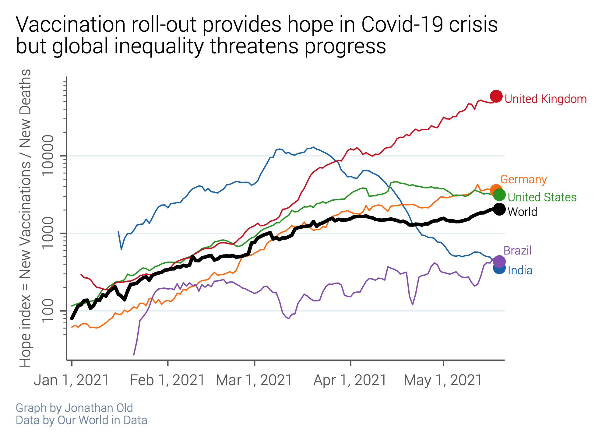

Welcome to my website. I am an Predoc with STICERD at the LSE, working with Robin Burgess and Oriana Bandiera. I am interested in political economy and development economics, and have previously worked on conflict and political reservations in India, democratic transitions and state repression, and longevity.
(with Clare Balboni, Robin Burgess, Anton Heil and Ben Olken)
American Economic Review Papers and Proceedings, May 2021, Vol. 111, 415–419
Abstract [+] [–] This paper examines the link between electoral incentives and environmental degradation by exploiting a satellite data set on 107,000 forest fires and 879 asynchronous district elections in Indonesia. Fires represent a cheap but illegal means of converting forested land to other uses, but risk burning out of control and creating substantial negative environmental externalities. We find a significant electoral cycle in forest fires. Ignitions and area burned decline during election years, but steeply increase in the year after. The results suggest that politicians may suppress this activity at times when it might particularly dent their electoral chances.
Abstract [+] [–] This paper examines the transnational dimensions of low-level conflict and state repression. In this regard, special emphasis is placed on the role of political regimes. Drawing on a simple model, we argue that democracy has opposing effects on conflict intensity. On the one hand, democracy satisfies demand for political participation and thus reduces conflict potential. On the other hand, we highlight that domestic democracy may spur dissatisfaction and conflict abroad, which, in turn, may induce conflict spillovers. As a result, the net effect of democracy on low-level conflict and state repression is ambiguous and depends on the level of democracy in the neighborhood: We predict that democracy is more pacifying in democratic environments and may spur conflict in autocratic environments. By the symmetry of the model, we also predict that democratic environments are more pacifying for democratic countries and may spur conflict in autocracies. Empirical evidence using panel data on different types of low-level conflict and state repression for 160 countries in the period from 1950 to 2011 supports these hypotheses. Additionally, two case studies illustrate the mechanisms of our model.
Abstract [+] [–] This paper analyzes the effect of political reservations on low-level subnational conflict in India. The recent literature on the impact of reservations on public goods provison finds that reservations benefit the targeted minorities. This may come at the detriment of other minorities or forward castes. I explore the latter possibility in a simple formal model of targeted public goods provision. The model indicates that reservations reduce conflict the larger and economically more disadvantaged the targeted minority is. However, this result may be mediated by reelection incentives. I investigate the predictions of the model with empirical data from Indian constituencies and village-level surveys. At the constituency level, where politicians can be reelected, reservations are associated with significantly lower levels of conflict. At the village level, the rotation of reservations constitutes an implicit term limit, and reservation is, if at all, associated with more conflict.
Abstract [+] [–] Although there is consensus that full democracies are less repressive than other regime types, the establishment of full democracy is not always followed by reduced state repression. Against that background, this paper examines heterogeneity in the relationship between democracy and government violations of human rights. Drawing on arguments from the civil war literature, we develop a simple model that highlights opposing effects of democracy on state repression. Consequently, the net effect of democracy is shown to be ambiguous. Furthermore, the model reveals that pacifying (adverse) effects of democracy are more likely to dominate in countries with higher (lower) income levels. These implications are tested empirically using different methodological approaches, including time-series cross-sectional regressions, event studies, and a recent generalization of the synthetic control method. Our analyses confirm that democracy is related to reduced repression in relatively rich countries, whereas we find no or even adverse effects in poor countries.
The Interaction Between Covid-19 and an Ageing Society”. With Andrew J. Scott. In: VoxEU / CEPR Policy Portal
(2020). Link to article
Sparprojekt oder Milchmädchenrechnung? Die finanziellen Effekte eines Bundeslandes „Mitteldeutschland [Fiscal aspects of a ‘Länder’ merger]. With Felix Rösel. In: ifo Dresden berichtet 25/02 (2018). 12–17. Link to pdf
Die Preisentwicklung für Kaufimmobilien in Sachsen– Ein Überblick über die aktuellen Daten [Recent data on housing prices in Saxony]. With Carolin Fritzsche. In: ifo Dresden berichtet 24/06 (2017). 20–24. Link to pdf
Steht sächsischen Schulen ein Qualitätsverlust bevor? Ein Überblick internationaler Studien zur Lehrqualität von Seiteneinsteigern [Review of studies on teaching quality of ‘career changers’]. With Julia Sonnenburg. In: ifo Dresden berichtet 24/06 (2017). 31–34. Link to pdf
Resources
When will countries reach the vaccination goal?
(Data source: Our World in Data. Own calculations)
Mentoring for donations
#EconTwitter I am offering FREE mentoring for anyone interested in applying for masters/predocs/PhD programs in Economics. In return, I request you to donate to an Indian Covid foundation, such as @Hemkunt_Fdn or @Khalsa_Aid. DM me if interested! #IndiaFightsCOVID19 1/3
The Hope Index is the number of new vaccinations, divided by the number of new deaths in a country. While every death causes incredible pain and suffering, every vaccination potentially saves lives and nurtures the hope that we can beat this pandemic. Countries with high vaccination rates, such as the UK, have succesfully dried out the pandemic, and their high Hope Index values give reason for optimism. On the other hand, outbreaks such as in India inflict unimaginable suffering, but also slow down vaccination campaigns, worsening an already difficult situation.

This website is inspired by Gautam Rao and Lei Yang. You can find the source code on my Github repository. Please feel free to copy it for your own website.


{kind=link}
{kind=link}